PRECIO DE VENTA
₡63.000.000
Apartamento en venta en Rohrmoser, planta baja
Primera planta · 53 m² · 2 dormitorios · 1 parqueo
Rohrmoser, Pavas, San José
Descripción
Excelente oportunidad de apartamento en venta en Rohrmoser. Ubicado estratégicamente en una primera planta (planta baja), este apartamento de 53 m² ofrece la máxima comodidad y fácil acceso en una de las mejores zonas de la ciudad. Ideal para vivir o como inversión.
Independiente y práctico: Medidores de agua y electricidad totalmente independientes, área de lavado amplia y cómoda, y acceso sin escaleras por estar en planta baja. Una oportunidad para tener su espacio propio en una ubicación inmejorable.
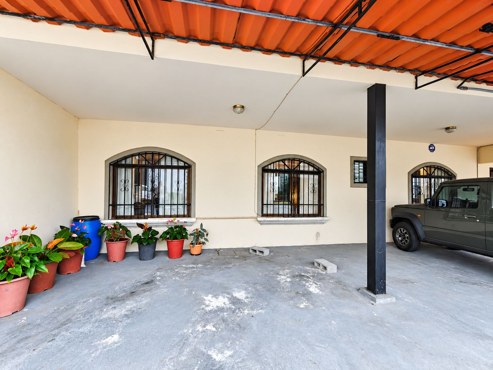
02 Parqueo techado
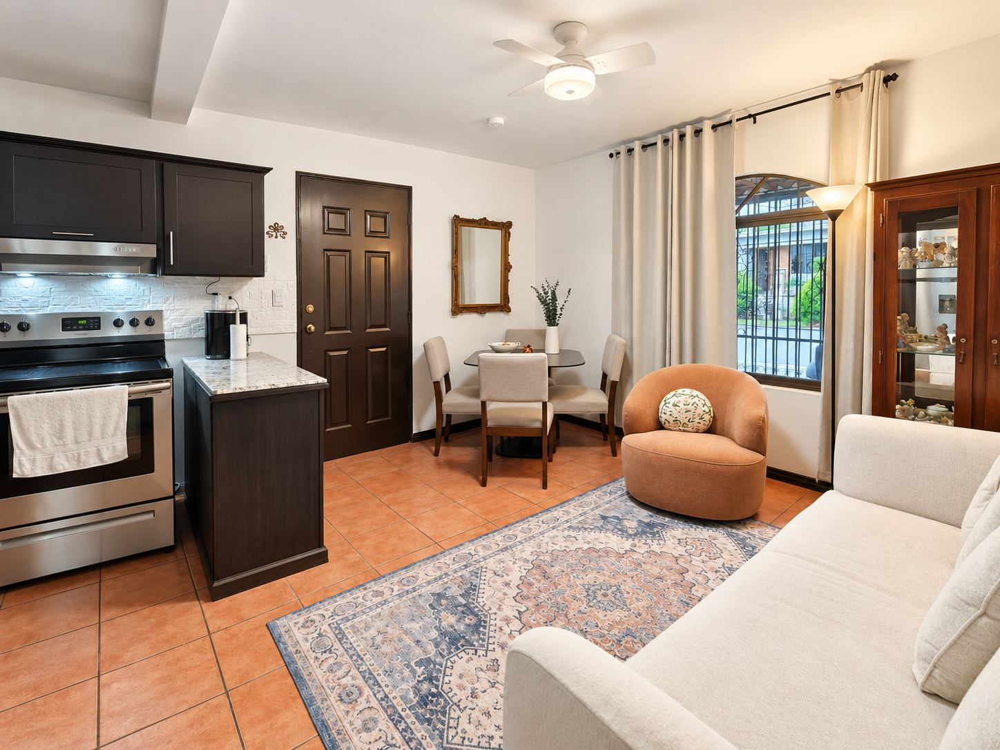
03 Sala, comedor y cocina integrados
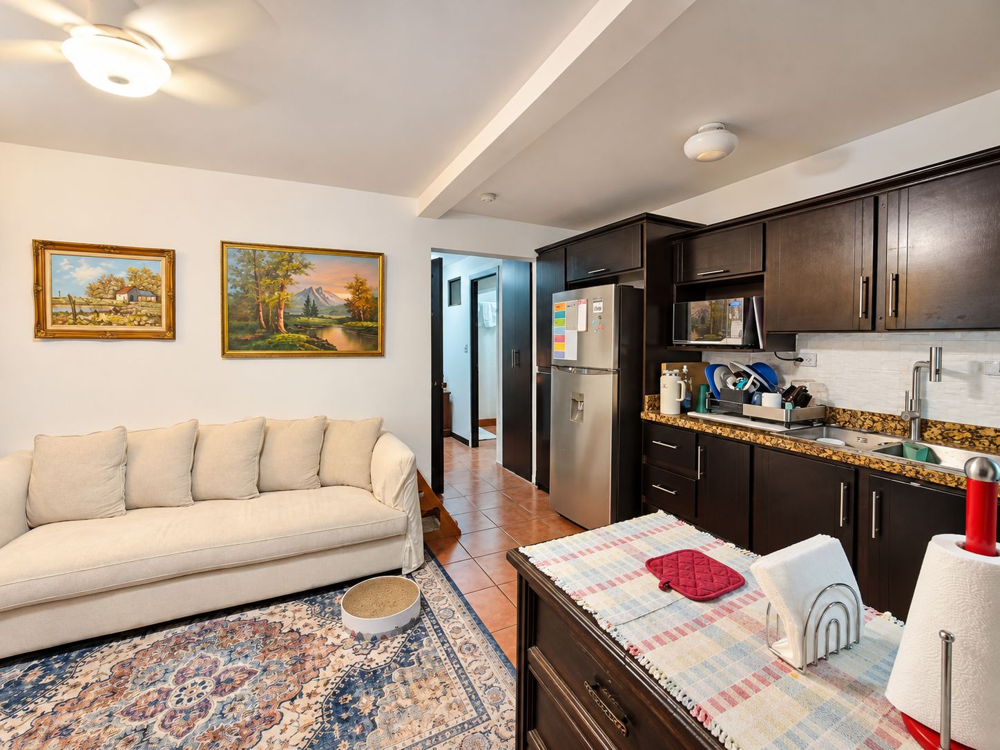
05 Sala integrada con la cocina
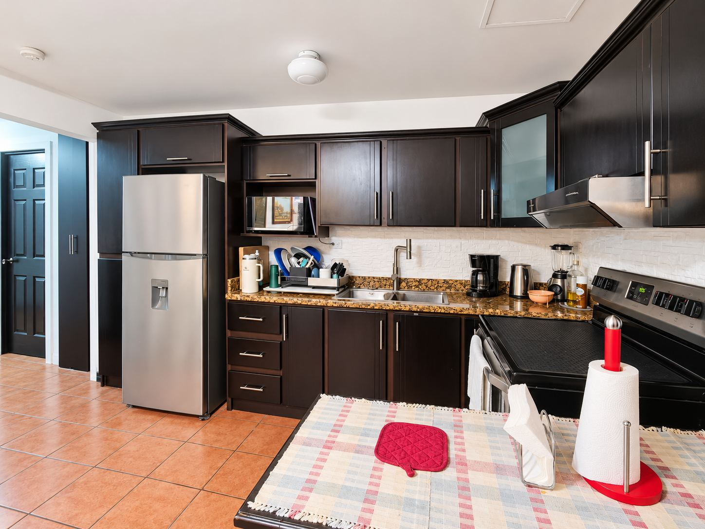
06 Cocina con sobres de granito
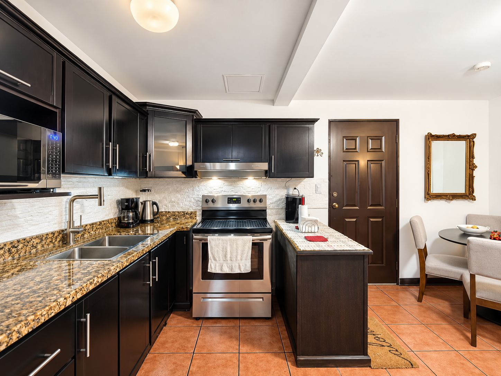
07 Cocina y acceso principal
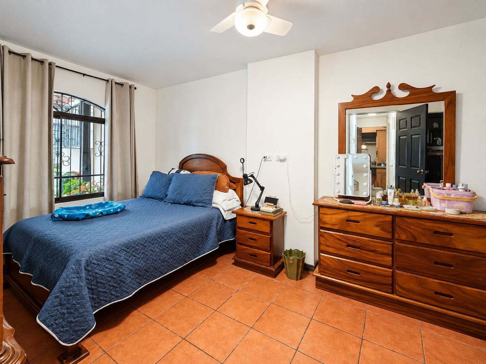
08 Dormitorio principal (muy amplio)
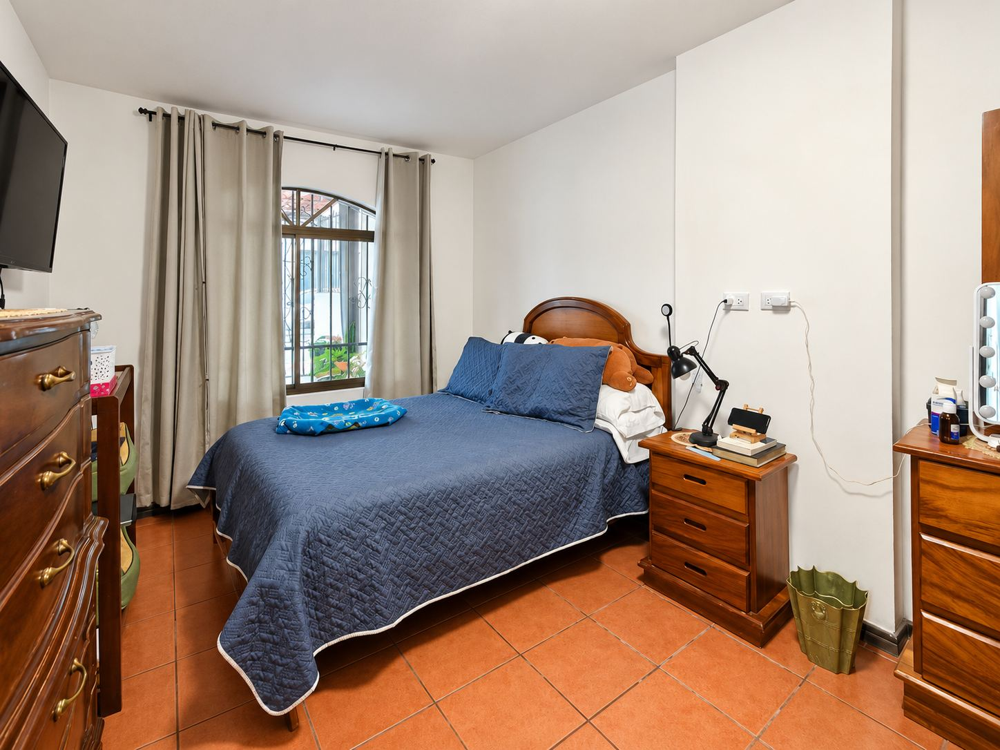
09 Dormitorio principal, otra vista
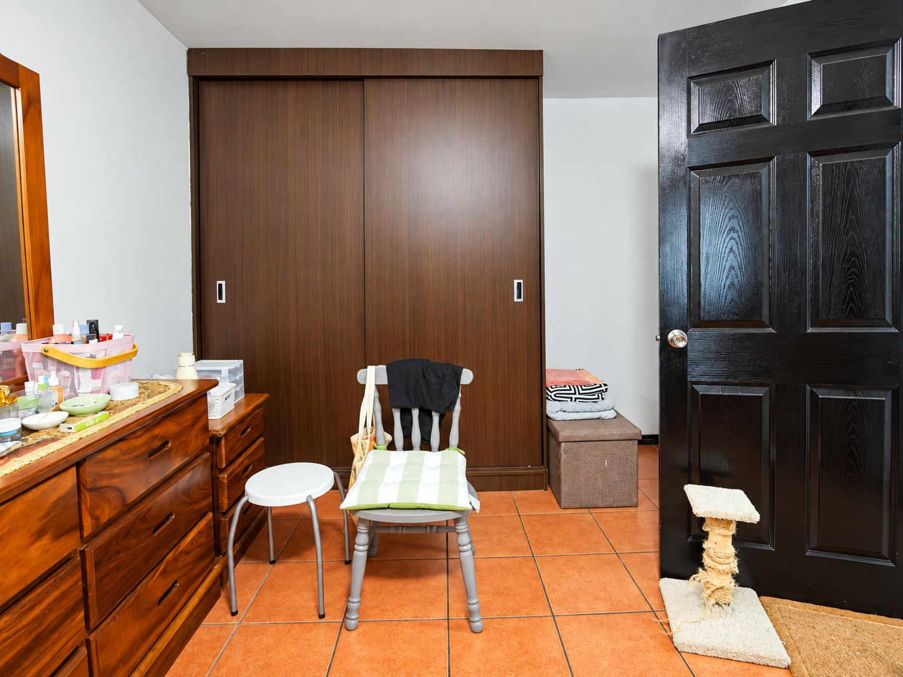
10 Clóset del dormitorio principal
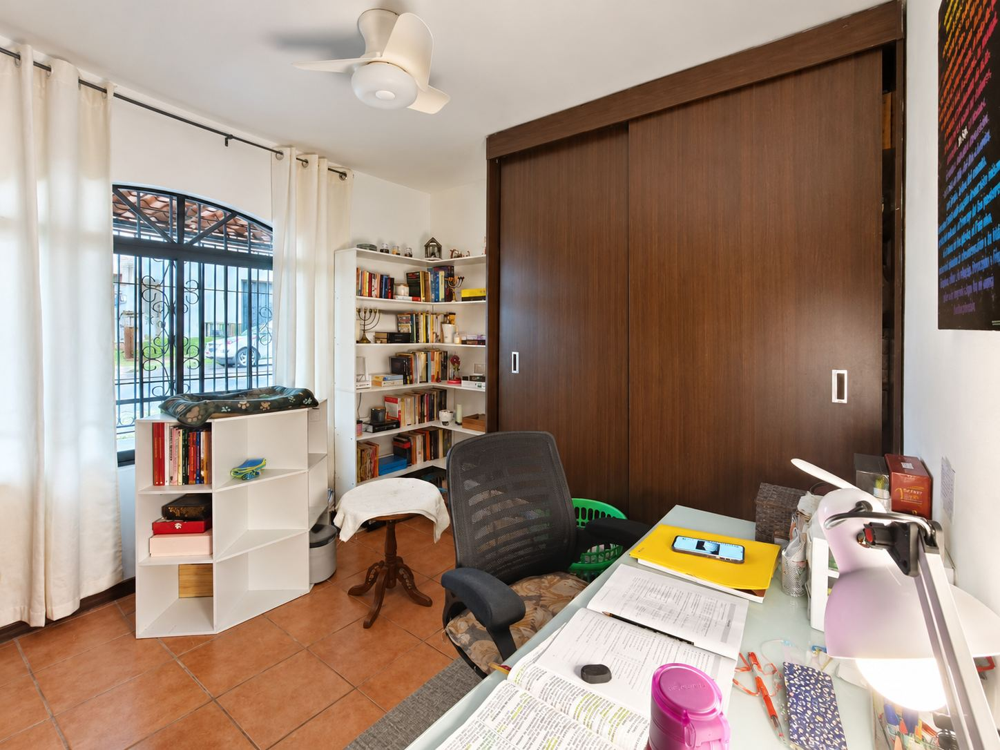
11 Segundo dormitorio con clóset
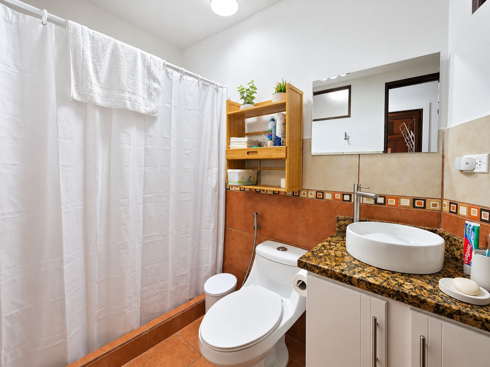
12 Baño completo
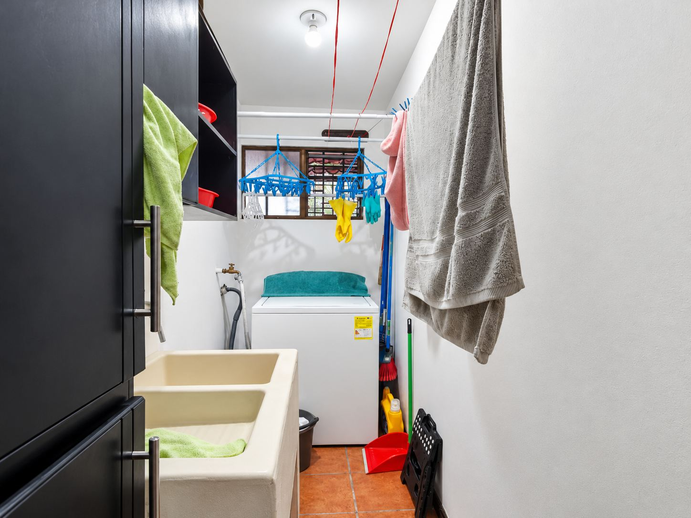
13 Área de lavado